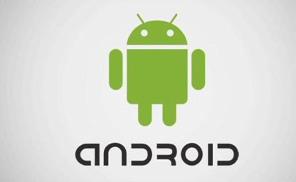
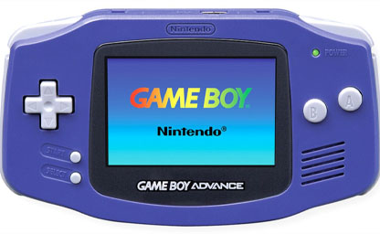
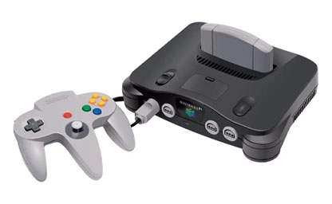
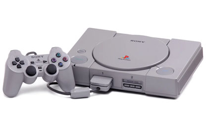
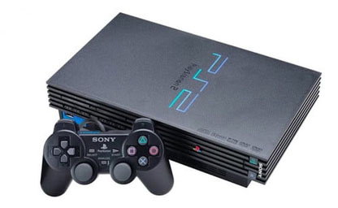
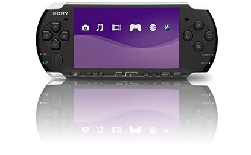
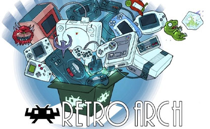

Emuladores para Windows
Los emuladores son algo ya habitual y conocido entre muchos de nosotros por eso les traemos un variedad de emuladores para muestro pc desde consolas antiguas (Retro) esta Android.
Algunos de los programas o comandos que mostramos a continuación son más que nada para ayudar con algunas necesidades que se presenten. Nos puede recomendar algunos programas para subir a nuestra WEB o si encuentra algún problema con algunos links o comandos le agradecemos informar para mantener esta página activa. igual todos los comandos y los link fueron actualizados el 30-03-2021.
Sistema Operativo:
Android
BlueStacks App Player y otros productos multiplataforma basado en la nube. BlueStacks App Player está diseñado para permitir que aplicaciones de Android puedan ejecutarse en computadoras de Windows.
Emuladores de Android
| Archivos | Servidores | ||
|---|---|---|---|
| BlueStacks | Mega | Nube | WEB Oficial |
Gameboy Advance
VisualBoyAdvance es un emulador libre distribuido bajo los términos de la GNU General Public License. Este programa emula software creado para la Game Boy, Super Game Boy, Game Boy Color y Game Boy Advance
Emuladores de Gameboy Advance
| Archivos | Servidores | ||
|---|---|---|---|
| VisualBoyAdvance | Mega | Nube | WEB Oficial |
Nintendo 64
Project64 es un emulador de Nintendo 64 escrito en C, diseñado para la plataforma Windows que empezó a comercializarse el 26 de mayo de 2001. Este software utiliza un sistema mediante plugins permitiendo que grupos de terceros empleen su propio software para la implementación de componentes específicos.
Emuladores de Nintendo 64
| Archivos | Servidores | ||
|---|---|---|---|
| Project64 | Mega | Nube | WEB Oficial |
PlayStation 1
ePSXe es un emulador freeware de la consola de videojuegos PlayStation que logra emular la mayoría de los videojuegos del sistema original, pudiendo ejecutar videojuegos desde el CD o bien desde una imagen del mismo.
Emuladores de PlayStation 1
| Archivos | Servidores | ||
|---|---|---|---|
| ePSXe | Mega | Nube | WEB Oficial |
PlayStation 2
PCSX2 es un emulador de PlayStation 2 para los sistemas operativos Windows, Linux y macOS. Fue iniciado por el equipo detrás de PCSX en 2002, y a 2022 el desarrollo aún está activo.
Emuladores de PlayStation 2
| Archivos | Servidores | ||
|---|---|---|---|
| PCSX2 | Mega | Nube | WEB Oficial |
PlayStation 3
RPCS3 es un emulador y depurador de software de código abierto para PlayStation 3. Fue desarrollado en el lenguaje de programación C++ y cuenta con OpenGL, Vulkan y DirectX 12 como renderizadores.
Emuladores de PlayStation 3
| Archivos | Servidores | ||
|---|---|---|---|
| RPCS3 | Mega | Nube | WEB Oficial |
PlayStation Portable
PSSPP es un software libre y emulador de PSP de código abierto para Windows, OS X, Linux, iOS, Android, BlackBerry 10 y Symbian que incrementa el foco en velocidad y portabilidad. Sea primero liberado al público el 1 de noviembre de 2012, autorizado bajo el GNU GPLv2 o superior.
Emuladores de PlayStation Portable
| Archivos | Servidores | ||
|---|---|---|---|
| PSSPP | Mega | Nube | WEB Oficial |
RetroArch
RetroArch es un programa con implementación de la API de libretro, diseñado como un front-end para ésta. Es gratuito, de código abierto, multiplataforma y disponible en virtud de la GNU GPLv3.
Emuladores de Juegos Retro
| Archivos | Servidores | ||
|---|---|---|---|
| RetroArch | Mega | Nube | WEB Oficial |